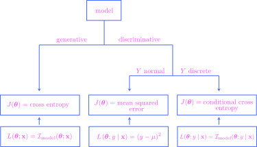

THIS CHAPTER IS CURRENTLY UNDER CONSTRUCTION!!!
13. Learning#
13.1. A first look at likelihood-based learning objectives#
To help motivate the learning objectives obtained in this section, let’s begin with a simple example. Suppose that we have an observed dataset
drawn from a random variable \(X \sim \Ber(\theta)\) with unknown parameter \(\theta \in [0,1]\). This is a very simple example of a probabilistic graphical model whose underlying graph consists of only two nodes, one for the parameter \(\theta\) and one for the (observed) random variable \(X\):
{kind=link}
The probability measure \(P_\theta\) proposed by the model has mass function
for \(x\in \{0,1\}\), while the dataset has its empirical probability measure \(\hat{P}\) with mass function \(\hat{p}(x)\) defined as
where \(\Sigma x \def x_1 + x_2 + \cdots + x_m\). The goal, of course, is to model the observed dataset with our univariate PGM, but the parameter \(\theta\) is unknown. An “optimal” value for the parameter will minimize the discrepancy (or “distance”) between the two distributions \(\hat{P}\) and \(P_\theta\). We seek to “learn” this optimal value from the dataset.
Of course, by now we know that “distance” means KL divergence, so the goal is to locate the minimizer
But from Theorem 10.1, the KL divergence may be expressed as a difference of two entropies,
and since the entropy \(H(\hat{P})\) does not depend on \(\theta\) it may be dropped from the optimization objective, and we see that we are equivalently searching for the minimizer of cross entropy:
Let’s unpack this cross entropy, using (13.1) and (13.2). By definition, we have
where
is the surprisal function (see Definition 10.1). Because we want to think of the data as being fixed and the parameter as variable, it will be convenient to define the model surprisal function to be
with the parameter \(\theta\) written first, similar to our convention regarding likelihood functions in Chapter 12. In fact, if we define the model likelihood function of our univariate Bernoulli model to be
then the model surprisal function is nothing but the negative logarithm of the model likelihood function.
Now, note that
since the dataset is assumed drawn from an IID random sample. If we define the left-hand side to be the data likelihood function,
then we may rewrite (13.4) in terms of likelihood functions as
(Notice that this is identical in concept to the factorizations for the PGMs studied in Chapter 12.) Finally, if we define the data surprisal function to be
then we may apply the negative logarithm to both sides of (13.5) to get the fundamental equation
expressing the data surprisal function as a sum of model surprisal functions.
Let’s now bring back the cross entropy expressed above as (13.3). Using the model surprisal function, we may write:
So, putting everything together, we get that
where the constant of proportionality is the (positive) number \(1/m\). Moreover, since the negative logarithm function is strictly decreasing, minimizing the data surprisal function with respect to \(\theta\) is equivalent to maximizing the data likelihood function with respect to \(\theta\). If we combine all of our observations into a single theorem, we get:
Theorem 13.1 (Equivalent learning objectives for the univariate Bernoulli model)
Let
be an observed dataset corresponding to a Bernoulli random variable \(X\sim \Ber(\theta)\) with unknown \(\theta\). Let \(P_\theta\) be the model distribution of \(X\) and let \(\hat{P}\) be the empirical distribution of the dataset. The following optimization objectives are equivalent:
Minimize the KL divergence \(D(\hat{P} \parallel P_\theta)\) with respect to \(\theta\).
Minimize the cross entropy \(H_{\hat{P}}(P_\theta)\) with respect to \(\theta\).
Minimize the data surprisal function \(\calI(\theta; x_1,\ldots,x_m)\) with respect to \(\theta\).
Maximize the data likelihood function \(\calL(\theta; x_1,\ldots,x_m)\) with respect to \(\theta\).
Though these optimization objectives are all equivalent to each other, they have different interpretations, conceptualizations, and advantages:
Minimizing the KL divergence between the empirical and model distributions has an immediate and concrete interpretation as minimizing the “distance” between these two distributions.
As a function of \(\theta\), the cross entropy \(J(\theta) = H_{\hat{P}}(P_\theta)\) may be viewed as a stochastic objective function, since it is exactly the mean of the model surprisal function. This opens the door for applications of the stochastic gradient descent algorithm studied in Section 11.4.
The third optimization objective seeks the model probability distribution according to which the data is least surprising.
The fourth optimization objective seeks the model probability distribution according to which the data is most likely.
Due to the equivalence with the fourth optimization objective, all these optimization objectives are referred to as likelihood-based learning objectives. The optimization process is then called maximum likelihood estimation (MLE), and the value
is called the maximum likelihood estimate (also MLE). But in actual real-world practice, nobody ever maximizes the likelihood function directly due to numerical instability (and other reasons), and instead one of the other three learning objectives is used.
It will turn out that a version of Theorem 13.1 holds for all probabilistic graphical models with discrete model distributions, not just our univariate Bernoulli model. But for the Bernoulli model, the MLE may be computed in closed form:
Theorem 13.2 (MLE for the univariate Bernoulli model)
Let \( x_1,x_2,\ldots,x_m \in \{0,1\}\) be an observed dataset corresponding to a Bernoulli random variable \(X\sim \Ber(\theta)\) with unknown \(\theta\). Then the (unique) maximum likelihood estimate \(\theta^\star_\text{MLE}\) is the ratio \( \Sigma x/m\).
Proof. We first address the special cases that \(\Sigma x =0\) or \(m\). In the first case, the data likelihood function is given by
But the latter expression is maximized at \(\theta^\star=0\), and so \(\theta^\star_\text{MLE} = \Sigma x/m\), as claimed. A similar argument shows that if \(\Sigma x = m\), then the likelihood function is maximized at \(\theta^\star = 1\), and so \(\theta^\star_\text{MLE} = \Sigma x / m\) again.
So, we may assume that \(0 < \Sigma x < m\). In this case, the maximizer of the likelihood function must occur in the open interval \((0,1)\). Thus, by Theorem 13.1, the parameter \(\theta^\star_\text{MLE}\) is equivalently the global minimizer of the data surprisal function
But minimizers of this function can only occur at points \(\theta^\star \in (0,1)\) where
But
and a little algebra yields the solution \(\theta^\star = \Sigma x/m\) to the stationarity equation (13.7). To confirm that \(\theta^\star = \Sigma x/m\) is a global minimizer over \((0,1)\), note that the second derivatives of both \(-\log{\theta}\) and \(-\log{(1-\theta)}\) are always positive, and hence the data surprisal function is strictly convex. Thus, \(\theta^\star_\text{MLE} = \Sigma x/m\) must indeed be the (unique) MLE. Q.E.D.
Though the \(\theta^\star_\text{MLE}\) is available in closed form for our univariate Bernoulli model, it is still amusing to search for \(\theta^\star\) by running stochastic gradient descent on the stochastic objective function given by cross entropy:
To create the following figure, we generated a sequence of \(128\) observations
with \(\Sigma x = 87\). Then, a run of mini-batch gradient descent yields the following:
Show code cell source
import numpy as np
import matplotlib.pyplot as plt
import pandas as pd
import seaborn as sns
import torch
import torch.nn.functional as F
import torch.nn as nn
from math import sqrt
import sys
sys.path.append('/Users/johnmyers/code/math_stats_ml/src/math_stats_ml')
from gd import GD, SGD, plot_sgd
#from math_stats_ml.gd import GD, SGD, plot_sgd, plot_gd
import matplotlib_inline.backend_inline
import matplotlib.colors as clr
plt.style.use('../aux-files/custom_style_light.mplstyle')
matplotlib_inline.backend_inline.set_matplotlib_formats('svg')
import warnings
warnings.filterwarnings('ignore', category=UserWarning)
blue = '#486AFB'
magenta = '#FD46FC'
torch.manual_seed(42)
theta = 0.65
m = 128
X = torch.bernoulli(torch.tensor([theta] * m))
def g(parameters, X):
theta = parameters['theta']
return -X * torch.log(theta) - (1 - X) * torch.log(1 - theta)
def cross_entropy(theta):
Sigmax = sum(X)
return -(1 / m) * (Sigmax * np.log(theta) + (m - Sigmax) * np.log(1 - theta))
parameters = {'theta': torch.tensor([0.05])}
alpha = 0.01
k = 8
N = 10
sgd_output = SGD(g=g, init_parameters=parameters, X=X, lr=alpha, batch_size=k, num_epochs=N)
epoch_step_nums = sgd_output.epoch_step_nums
objectives = sgd_output.per_step_objectives[epoch_step_nums]
running_parameters = sgd_output.parameters['theta']
running_parameters = running_parameters[epoch_step_nums]
grid = np.linspace(start=0.01, stop=0.99, num=200)
_, axes = plt.subplots(ncols=2, figsize=(10, 4), sharey=True)
axes[0].plot(grid, cross_entropy(grid))
axes[0].step(running_parameters, objectives, where='post', color=magenta)
axes[0].scatter(running_parameters, objectives, color=magenta, s=45, zorder=3)
axes[0].set_xlabel('$\\theta$')
axes[0].set_ylabel('cross entropy')
axes[1].plot(range(len(sgd_output.per_step_objectives)), sgd_output.per_step_objectives, color=magenta, alpha=0.45)
axes[1].scatter(epoch_step_nums, objectives, s=50, color=magenta, zorder=3)
axes[1].set_xlabel('gradient steps')
plt.suptitle(f'mini-batch gradient descent\n$k=${k}, $\\alpha =${alpha}, $\\beta=$0, $N = ${N}')
plt.tight_layout()

The blue curve in the left-hand plot is the graph of the exact cross entropy function \(H_{\hat{P}}(P_\theta)\). The magenta points—which represent a selection of outputs of the algorithm—do not fall precisely on this graph since they are approximations to the cross entropy, obtained as realizations of the expression on the right-hand side of
where \(B\) is a mini-batch of data of size \(k=8\). (This was discussed right after we introduced Algorithm 11.4 in Chapter 11.) On the right-hand size of the figure, we have plotted the (approximate) cross entropy versus gradient steps, a type of plot familiar from Chapter 11. The magenta dots on the two sides of the figure correspond to each other; they represent the (approximate) cross entropies every 16 gradient steps (\(=1\) epoch). Notice that the algorithm appears to be converging to the true value \(\theta^\star_\text{MLE} = 87/128 \approx 0.68\) given by Theorem 13.2.
13.2. General MLE#
In broad concept, maximum likelihood estimation works for all the probabilistic graphical models that we studied in Chapter 12, though there are some variations between the different models.
First, we must distinguish between training a model as a generative model versus a discriminative model. Along with every PGM comes the joint distribution over all random variables, and for a generative model, the learning process trains the model with the goal to learn the parameters of the entire joint distribution, while for a discriminative model, the learning process aims at learning the parameters of only a conditional distribution. Of the types of models explicitly studied in Chapter 12—linear regression models, logistic regression models, and neural networks—all three are trained as discriminative models, aiming to learn the parameters of the conditional distributions of the response variable \(Y\) given the predictor vector \(\bX\). On the other hand, both the univariate Bernoulli model in the previous section and the Naive Bayes model—studied in the programming assignment for Chapter 12—are trained as generative models.
We begin our discussion with the case of generative models, since it is essentially just a recapitulation of our discussion of the univariate Bernoulli model in the previous section. If such a model consists of \(n\) random variables, say \(X_1,X_2,\ldots,X_n\), then we will write them as an \(n\)-dimensional random vector
For simplicity, we will assume that \(\bX\) is discrete, so that if \(\btheta\) is the parameter vector for the model, we have a joint mass function \(p(\bx;\btheta)\). Then the same definitions given in the previous section for the univariate Bernoulli model apply here:
Definition 13.1
Consider a PGM trained as a generative model containing the random variables \(\bX = (X_1,X_2,\ldots,X_n)\), and let \(\btheta\) be the parameter vector.
For fixed \(\bx\in \bbr^n\), the model likelihood function is given by
\[ \calL(\btheta;\bx) \def p(\bx; \btheta), \]thought of as a function of \(\btheta\). The model surprisal function is given by
\[ \calI(\btheta;\bx) \def -\log \left[ \calL(\btheta;\bx) \right] = -\log \left[p(\bx; \btheta) \right], \]also thought of as a function of \(\btheta\).
For a fixed, observed dataset \(\bx_1,\bx_2,\ldots,\bx_m\in \bbr^n\), the data likelihood function is given by
\[ \calL(\btheta;\bx_1,\ldots,\bx_m) \def p(\bx_1,\ldots,\bx_m; \btheta), \]thought of as a function of \(\btheta\). The data surprisal function is given by
\[ \calI(\btheta;\bx_1,\ldots,\bx_m) \def -\log \left[ \calL(\btheta;\bx_1,\ldots,\bx_m) \right] = -\log \left[p(\bx_1,\ldots,\bx_m; \btheta) \right], \]also thought of as a function of \(\btheta\).
Sometimes, if mentioning the specific observation \(\bx\) or the observed dataset \(\bx_1,\bx_2,\ldots,\bx_m\) is not important, we will write the functions in the definition as
Since observed datasets are assumed to be observations of IID random samples, we have:
Theorem 13.3 (Data likelihood/surprisal \(=\) product/sum of model likelihood/surprisal)
Consider a PGM trained as a generative model containing the random variables \(\bX = (X_1,X_2,\ldots,X_n)\), and let \(\btheta\) be the parameter vector. If
is an observed dataset, then we have
Now, we state a version of Theorem 13.1 that holds for generative models:
Theorem 13.4 (Equivalent learning objectives for generative PGMs)
Consider a PGM trained as a generative model containing the random variables \(\bX = (X_1,X_2,\ldots,X_n)\), and let \(\btheta\) be the parameter vector. Let
be an observed dataset, let \(P_\btheta\) be the model joint probability distribution, and let \(\hat{P}\) be the empirical distribution of the dataset. The following optimization objectives are equivalent:
Minimize the KL divergence \(D(\hat{P} \parallel P_\btheta)\) with respect to \(\btheta\).
Minimize the cross entropy \(H_{\hat{P}}(P_\btheta)\) with respect to \(\btheta\).
Minimize the data surprisal function \(\calI(\btheta; \bx_1,\ldots,\bx_m)\) with respect to \(\btheta\).
Maximize the data likelihood function \(\calL(\btheta; \bx_1,\ldots,\bx_m)\) with respect to \(\btheta\).
The proof of the equivalence of these training objectives is the same as the proof in the special case of the univariate Bernoulli model in the previous section. The optimization process which seeks a solution to these (equivalent) optimization problems is called maximum likelihood estimatation (MLE), and any solution is called a maximum likelihood estimate (also MLE) and is denoted \(\btheta_\text{MLE}^\star\).
We now turn toward discriminative models, which include all those models explicitly studied in Chapter 12. In this case, we must further distinguish between the models with discrete response variable \(Y\) versus a continuous one. Linear regression models are examples of the latter type, while we also briefly encountered an example of a neural network model with continuous \(Y\) in the worksheet to Chapter 12. For both of these models, the response variable \(Y\) was actually normally distributed (conditionally), so this will be the only case of continuous \(Y\) that we consider in this book.
Definition 13.2
Consider a PGM trained as a discriminative model with predictor vector \(\bX\), response variable \(Y\), and parameter vector \(\btheta\).
For fixed \(\bx\in \bbr^n\), the model likelihood function is given either by
\[ \calL(\btheta; \ y\mid \bx) \def p(y\mid \bx;\ \btheta) \quad \text{or} \quad \calL(\btheta; \ y\mid \bx) \def f(y\mid \bx;\ \btheta), \]depending on whether \(Y\) is (conditionally) discrete or continuous. The model likelihood function is thought of as a function of \(\btheta\). The model surprisal function is given by
\[ \calI(\btheta; \ y\mid \bx) \def -\log \left[ \calL(y\mid \btheta; \ \bx) \right], \]also thought of as a function of \(\btheta\).
For a fixed, observed dataset
\[ (\bx_1,y_1),(\bx_2,y_2),\ldots,(\bx_m,y_m)\in \bbr^n \times \bbr, \]the data likelihood function is given either by
\[ \calL(\btheta; \ y_1,\ldots,y_m \mid \bx_1,\ldots,\bx_m) \def p(y_1,\ldots,y_m \mid \bx_1,\ldots,\bx_m; \ \btheta) \]or
\[ \calL(\btheta; \ y_1,\ldots,y_m \mid \bx_1,\ldots,\bx_m) \def f(y_1,\ldots,y_m \mid \bx_1,\ldots,\bx_m; \ \btheta) \]depending on whether \(Y\) is (conditionally) discrete or continuous. The data likelihood function is thought of as a function of \(\btheta\). The data surprisal function is given by
\[ \calI(\btheta;\ y\mid \bx_1,\ldots,\bx_m) \def -\log \left[ \calL(\btheta; \ y\mid \bx_1,\ldots,\bx_m) \right], \]also thought of as a function of \(\btheta\).
As with generative models, if mentioning the specific observation or the observed dataset is not important, we will write the functions in the definition as
From independence, we also get the analog of Theorem 13.3:
Theorem 13.5 (Data likelihood/surprisal \(=\) product/sum of model likelihood/surprisal)
Consider a PGM trained as a discriminative model with predictor vector \(\bX\), response variable \(Y\), and parameter vector \(\btheta\). If
is an observed dataset, then we have
Just as for generative models, for discriminative models we have the stochastic objective function
where \(\hat{p}(\bx,y)\) is the empirical joint mass function of an observed dataset. For generative models, this function was exactly the cross entropy from the empirical distribution to the model distribution—but for discriminative models, it has a different interpretation. In the case that \(Y\) is discrete, it is actually a type of conditional cross entropy, and minimizing this objective is the same as minimizing the conditional KL divergence. In the case that \(Y\) is conditionally normal, the objective \(J(\btheta)\) “is” the mean squared error (or MSE), which we first encountered in the programming assignment for the previous chapter. We say that it “is” the MSE, with quotation marks, because it’s not quite equal to the MSE on the nose—this is explained precisely in the following result:
Theorem 13.6 (Mean squared error as a stochastic objective function)
Consider a PGM trained as a discriminative model with predictor vector \(\bX\), response variable \(Y\), parameter vector \(\btheta\), and let
be an observed dataset with empirical joint mass function \(\hat{p}(\bx,y)\). Suppose also that the conditional distribution of \(Y\) given \(\bX\) is normal, with fixed variance \(\sigma^2\), and that the mean \(\mu = \mu(\bx,\btheta)\) of the distribution is the link function. Then the minimizers of the stochastic objective function
are the same as the minimizers of the mean squared error
where \(\mu_i = \mu(\bx_i,\btheta)\).
Proof. The proof begins with a simple computation:
Then
Assuming that the variance \(\sigma^2\) is fixed, we immediately see that minimizing the left-hand side with respect to \(\btheta\) is the same as minimizing the MSE. Q.E.D.
Since multiplying an objective function by a positive constant does not change its extremizers, we may modify the mean squared error function in several ways to best suit the context. For example, sometimes it is convenient to instead consider the residual sum of squares function
while in other situations we might even divide this latter quantity by \(2\) and consider the equivalent objective
See, for example, Theorem 13.8 in the next section.
Our discussion on the identity of the stochastic objective function \(J(\btheta)\) is summarized in the following chart:
{kind=link}
Again, care must be taken in interpreting \(J(\btheta)\) in the case of a discriminative model with (conditionally) normal \(Y\), since it is technically not equal to the MSE exactly, and we must also assume that the variance \(\sigma^2\) is fixed, as discussed in Theorem 13.6. In any case, we may now state the following theorem, which is a version of Theorem 13.4 for discriminative models:
Theorem 13.7 (Equivalent learning objectives for discriminative PGMs)
Consider a PGM trained as a discriminative model with predictor vector \(\bX\), response variable \(Y\), and parameter vector \(\btheta\). Let
be an observed dataset, with empirical joint mass function \(\hat{p}(\bx,y)\). The following optimization objectives are equivalent:
Minimize the stochastic objective function
\[ J(\btheta) \def E_{(\bx, y) \sim \hat{p}(\bx, y)} \left[ \calI(\btheta; \ y \mid \bx) \right] = \frac{1}{m} \sum_{i=1}^m \calI(\btheta; \ y_i \mid \bx_i) \]with respect to \(\btheta\).
Minimize the data surprisal function \(\calI(\btheta; \ y_1,\ldots,y_m \mid \bx_1,\ldots,\bx_m)\) with respect to \(\btheta\).
Maximize the data likelihood function \(\calL(\btheta; \ y_1,\ldots,y_m \mid \bx_1,\ldots,\bx_m)\) with respect to \(\btheta\).
Just as for generative models, the optimization process which seeks a solution to these (equivalent) optimization problems is called maximum likelihood estimation (MLE), and any solution is called a maximum likelihood estimate (also MLE) and is denoted \(\btheta_\text{MLE}^\star\).
13.3. MLE for linear regression#
Having studied maximum likelihood estimation in general, we now turn toward specific examples, beginning with linear regression models. These are trained as discriminative models with a response variable \(Y\) which is (conditionally) normal. If we assume that the variance parameter \(\sigma^2\) is fixed, then the underlying graph of the model is of the form

where \(\beta_0 \in \bbr\) and \(\bbeta \in \mathbb{R}^{n}\) are the only parameters. The link function at \(Y\) is still given by
For these models, it turns out MLEs are obtainable in closed form:
Theorem 13.8 (MLEs for linear regression models with known variance)
Consider a linear regression model with fixed variance \(\sigma^2\), and let
be an observed dataset. Supposing \(\bx_i^\intercal= (x_{i1},x_{i2},\ldots,x_{in})\) for each \(i=1,\ldots,m\), let
where \(\bbeta^\intercal = (\beta_1,\ldots,\beta_n)\). Provided that the \((n+1) \times (n+1)\) square matrix \(\mathbfcal{X}^T \mathbfcal{X}\) is invertible, maximum likelihood estimates for the parameters \(\beta_0\) and \(\bbeta\) are given by
Proof. As we noted above in the discussion after the proof of Theorem 13.6, the MLE may be obtained as the minimizer of half the residual sum of squares:
where \(\mu_i = \beta_0 + \bx_i^\intercal \bbeta\) for each \(i=1,\ldots,m\). But as we will show in the worksheet problem directly after this proof, taking the gradient gives
where \(\nabla_\btheta \left(\by - \mathbfcal{X}\btheta \right)\) is the Jacobian matrix of the vector-valued function \(\btheta \mapsto \by - \mathbfcal{X} \btheta\). But it is easy to show that \(\nabla_\btheta \left(\by - \mathbfcal{X}\btheta \right) = - \mathbfcal{X}\), and so
Setting the gradient to zero and rearranging gives
from which the desired equation follows.
The only thing that is left to prove is that we have actually obtained a global minimizer. But this follows from convexity of the objective function \(J(\btheta)\), which we may demonstrate by showing the Hessian matrix \(\nabla^2 J(\btheta)\) is positive semidefinite (see Theorem 11.7). To do this, note that \(\nabla^2 J(\btheta) = \mathbfcal{X}^\intercal \mathbfcal{X}\) from (13.8). But then, given any vector \(\bz \in \bbr^{n+1}\), we have
Thus the Hessian matrix is indeed positive semidefinite. Q.E.D.
As we saw in the proof, the maximum likelihood parameter estimates are those that minimize the residual sum of squares \(RSS(\btheta)\), which explains why the MLEs are also often called the ordinary least squares (OLS) estimates.
It is worth writing out the MLEs in the case of simple linear regression:
Corollary 13.1 (MLEs for simple linear regression models with known variance)
Let the notation be as in Theorem 13.8, but assume that \(\bX\) is \(1\)-dimensional, equal to a random variable \(X\). Then MLEs for the parameters \(\beta_0\) and \(\beta_1\) are given by
where \(\bar{x} = \frac{1}{m} \sum_{i=1}^m x_i\) and \(\bar{y} = \frac{1}{m} \sum_{i=1}^m y_i\) are the empirical means.
Proof. First note that
Assuming this matrix has nonzero determinant, we have
But
and so from
we conclude
But as you may easily check, we have
and
from which the desired equation for \(\beta_1\) follows. To obtain the equation for \(\beta_0\), note that the equation
implies \(m \beta_0 + m \beta_1 \bar{x} = m \bar{y}\), and so \(\beta_0 = \bar{y} - \beta_1 \bar{x}\). Q.E.D.
To illustrate the concepts, let’s return yet again to the Ames housing dataset (see the description at the beginning of Section 12.3). While in principle we may compute the exact MLEs for a linear regression model on this data, it is amusing to approximate them using stochastic gradient descent. To do this, however, we must “standardize” the area and price features for numerical stability, which means that we subtract the empirical means and divide by the standard deviations. When we do so, we get a scatter plot that looks like:
Show code cell source
from sklearn.preprocessing import StandardScaler
# import data
url = 'https://raw.githubusercontent.com/jmyers7/stats-book-materials/main/data/data-3-1.csv'
df = pd.read_csv(url, usecols=['area', 'price'])
ss = StandardScaler()
data_std = ss.fit_transform(df.to_numpy())
sns.scatterplot(x=data_std[:, 0], y=data_std[:, 1], alpha=0.4)
plt.gcf().set_size_inches(w=5, h=3)
plt.xlabel('standardized area')
plt.ylabel('standardized price')
plt.tight_layout()

Notice that both features are on similar scales. Then, we run the algorithm using the mean squared error function
as the objective function:
Show code cell source
X = torch.tensor(data_std[:, 0], dtype=torch.float32)
y = torch.tensor(data_std[:, 1], dtype=torch.float32)
beta0 = torch.tensor([1.])
beta = torch.tensor([1.])
theta0 = {'beta0': beta0, 'beta': beta}
def g(parameters, x, y):
beta0 = parameters['beta0']
beta = parameters['beta']
return (y - beta0 - beta * x) ** 2
alpha = 0.1
N = 5
k = 512
sgd_output = SGD(g=g, init_parameters=theta0, X=X, y=y, lr=alpha, batch_size=k, num_epochs=N, random_state=42)
plot_sgd(sgd_output,
ylabel='mean squared error (MSE)',
per_step_label='MSE per step',
per_epoch_label='mean MSE per epoch',
per_epoch_color=magenta,
legend=True,
per_step_alpha=0.4)

13.4. MLE for logistic regression#
Show code cell source
url = 'https://raw.githubusercontent.com/jmyers7/stats-book-materials/main/data/ch12-book-data-01.csv'
df = pd.read_csv(url)
# convert the data to numpy arrays
X = df[['x_1', 'x_2']].to_numpy()
y = df['y'].to_numpy()
# convert the data to torch tensors
X = torch.tensor(data=X, dtype=torch.float32)
y = torch.tensor(data=y, dtype=torch.float32)
# plot the data
g = sns.scatterplot(data=df, x='x_1', y='x_2', hue='y')
# change the default seaborn legend
g.legend_.set_title(None)
new_labels = ['class 0', 'class 1']
for t, l in zip(g.legend_.texts, new_labels):
t.set_text(l)
plt.xlabel('$x_1$')
plt.ylabel('$x_2$')
plt.gcf().set_size_inches(w=5, h=3)
plt.tight_layout()

Show code cell source
# define the link function at Y
def phi(X, parameters):
beta0 = parameters['beta0']
beta = parameters['beta']
return torch.sigmoid(beta0 + X @ beta)
# define the data surprisal function
def I(parameters):
probs = phi(X, parameters)
return torch.sum(-y * torch.log(probs) - (1 - y) * torch.log(1 - probs))
# define the predictor
def predictor(X, parameters):
probs = phi(X, parameters)
return (probs >= 0.5).to(torch.int)
# initialize the weights and biases
torch.manual_seed(42)
beta0 = torch.normal(mean=0, std=1e-1, size=(1,))
beta = torch.normal(mean=0, std=1e-1, size=(2,))
theta0 = {'beta0': beta0, 'beta': beta}
# run gradient descent
N = 50
alpha = 1e-3
gd_output = GD(J=I, init_parameters=theta0, lr=alpha, num_steps=N)
# define grid for contour plot
resolution = 1000
x1_grid = torch.linspace(-2, 2, resolution)
x2_grid = torch.linspace(-4, 4, resolution)
x1_grid, x2_grid = torch.meshgrid(x1_grid, x2_grid)
grid = torch.column_stack((x1_grid.reshape((resolution ** 2, -1)), x2_grid.reshape((resolution ** 2, -1))))
# define colormap for the contour plots
desat_blue = '#7F93FF'
desat_magenta = '#FF7CFE'
binary_cmap = clr.LinearSegmentedColormap.from_list(name='binary', colors=[desat_blue, desat_magenta], N=2)
epoch_list = [0, 3, N]
running_parameters = gd_output.parameters
_, axes = plt.subplots(ncols=2, nrows=len(epoch_list), figsize=(10, 9))
for i, epoch in enumerate(epoch_list):
parameters = {key: value[epoch] for key, value in running_parameters.items()}
# plot the objective function
axes[i, 0].plot(gd_output.grad_steps, gd_output.per_step_objectives, label='surprisal per step')
axes[i, 0].set_xlabel('gradient steps')
axes[i, 0].set_ylabel('surprisal')
axes[i, 0].scatter(epoch_list[i], gd_output.per_step_objectives[epoch], color=magenta, s=100, zorder=3)
axes[i, 0].legend()
# apply the fitted model to the grid
z = predictor(grid, parameters)
# plot the decision boundary and colors
z = z.reshape(shape=(resolution, resolution))
axes[i, 1].contourf(x1_grid, x2_grid, z, cmap=binary_cmap)
axes[i, 1].set_xlabel('$x_1$')
axes[i, 1].set_ylabel('$x_2$')
# plot the data
g = sns.scatterplot(data=df, x='x_1', y='x_2', hue='y', ax=axes[i, 1])
# change the default seaborn legend
g.legend_.set_title(None)
new_labels = ['class 0', 'class 1']
for t, l in zip(g.legend_.texts, new_labels):
t.set_text(l)
plt.suptitle(f'gradient descent\n$\\alpha={alpha}$, $\\beta=0$, $N={N}$')
plt.tight_layout()

13.5. MLE for neural networks#
Show code cell source
url = 'https://raw.githubusercontent.com/jmyers7/stats-book-materials/main/data/ch12-book-data-02.csv'
df = pd.read_csv(url)
# convert the data to numpy arrays
X = df[['x_1', 'x_2']].to_numpy()
y = df['y'].to_numpy()
# convert the data to torch tensors
X = torch.tensor(data=X, dtype=torch.float32)
y = torch.tensor(data=y, dtype=torch.float32)
# plot the data
g = sns.scatterplot(data=df, x='x_1', y='x_2', hue='y')
# change the default seaborn legend
g.legend_.set_title(None)
new_labels = ['class 0', 'class 1']
for t, l in zip(g.legend_.texts, new_labels):
t.set_text(l)
plt.xlabel('$x_1$')
plt.ylabel('$x_2$')
plt.gcf().set_size_inches(w=5, h=3)
plt.tight_layout()

Show code cell source
# define the link function at Y
def phi(X, parameters):
Z_0 = X
Z_1 = F.relu(Z_0 @ parameters['weight_1'] + parameters['bias_1'])
Z_2 = F.relu(Z_1 @ parameters['weight_2'] + parameters['bias_2'])
Z_3 = F.relu(Z_2 @ parameters['weight_3'] + parameters['bias_3'])
return torch.sigmoid(Z_3 @ parameters['weight_4'] + parameters['bias_4'])
# define the model surprisal function
def I(parameters, X, y):
probs = phi(X, parameters)
return -y * torch.log(probs) - (1 - y) * torch.log(1 - probs)
# define the predictor
def predictor(X, parameters):
probs = phi(X, parameters)
return (probs >= 0.5).to(torch.int)
# define the network architecture
k1 = 8 # width of first hidden layer
k2 = 8 # width of second hidden layer
k3 = 4 # width of third hidden layer
widths = [2, k1, k2, k3, 1]
# initialize the weights and biases
torch.manual_seed(42)
theta0 = {}
for i in range(1, 5):
weight = torch.empty(widths[i-1], widths[i])
bias = torch.empty(widths[i])
nn.init.uniform_(weight, a=-1/sqrt(widths[i-1]), b=1/sqrt(widths[i-1]))
nn.init.uniform_(bias, a=-1/sqrt(widths[i-1]), b=1/sqrt(widths[i-1]))
theta0 = theta0 | {'weight_' + str(i): weight.squeeze()}
theta0 = theta0 | {'bias_' + str(i): bias}
# run SGD
N = 80
k = 128
alpha = 0.1
sgd_output = SGD(g=I, init_parameters=theta0, X=X, y=y, lr=alpha, batch_size=k, num_epochs=N, random_state=42)
# get the grid for the contour plot
resolution = 1000
x1_grid = torch.linspace(-1.75, 1.75, resolution)
x2_grid = torch.linspace(-1.5, 1.5, resolution)
x1_grid, x2_grid = torch.meshgrid(x1_grid, x2_grid)
grid = torch.column_stack((x1_grid.reshape((resolution ** 2, -1)), x2_grid.reshape((resolution ** 2, -1))))
epoch_list = [0, 750, len(sgd_output.per_step_objectives) - 1]
running_parameters = sgd_output.parameters
_, axes = plt.subplots(ncols=2, nrows=len(epoch_list), figsize=(10, 9))
for i, epoch in enumerate(epoch_list):
parameters = {key: value[epoch] for key, value in running_parameters.items()}
# plot the objective function
axes[i, 0].plot(sgd_output.grad_steps, sgd_output.per_step_objectives, alpha=0.25, label='cross entropy per step')
axes[i, 0].plot(sgd_output.epoch_step_nums, sgd_output.per_epoch_objectives, label='mean cross entropy per epoch')
axes[i, 0].set_xlabel('gradient steps')
axes[i, 0].set_ylabel('cross entropy')
axes[i, 0].scatter(epoch_list[i], sgd_output.per_step_objectives[epoch], color=magenta, s=100, zorder=3)
axes[i, 0].legend()
# apply the fitted model to the grid
z = predictor(grid, parameters)
# plot the decision boundary and colors
z = z.reshape(shape=(resolution, resolution))
axes[i, 1].contourf(x1_grid, x2_grid, z, cmap=binary_cmap)
axes[i, 1].set_xlabel('$x_1$')
axes[i, 1].set_ylabel('$x_2$')
# plot the data
g = sns.scatterplot(data=df, x='x_1', y='x_2', hue='y', ax=axes[i, 1])
# change the default seaborn legend
g.legend_.set_title(None)
new_labels = ['class 0', 'class 1']
for t, l in zip(g.legend_.texts, new_labels):
t.set_text(l)
plt.suptitle(f'mini-batch gradient descent\n$\\alpha={alpha}$, $\\beta=0$, $k={k}$, $N={N}$')
plt.tight_layout()